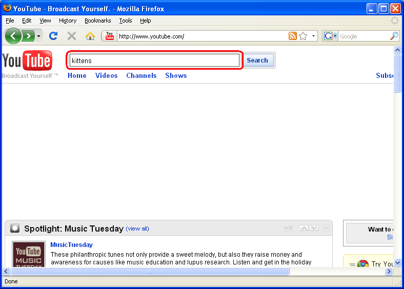
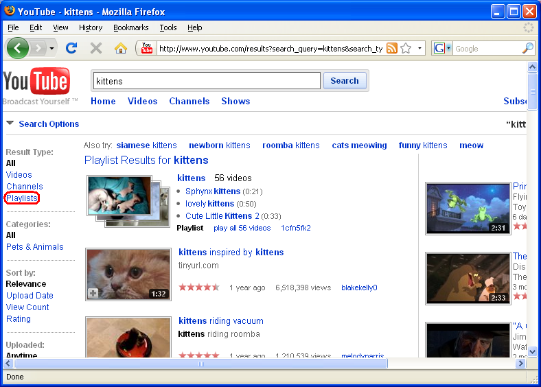
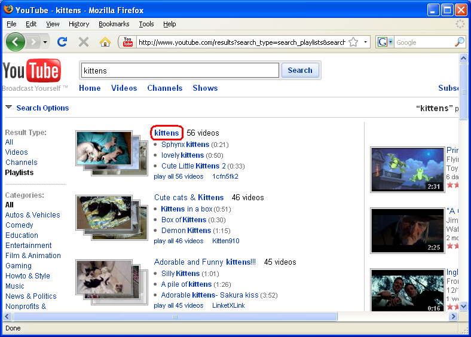
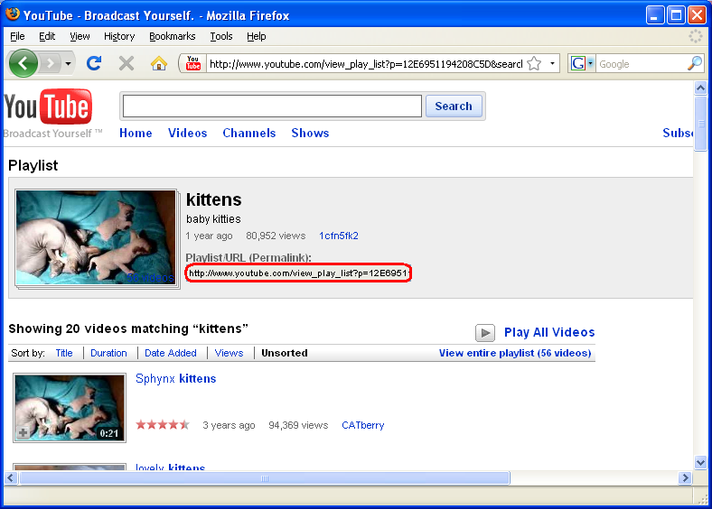

These instructions describe how to get the right URL from YouTube to watch videos from a playlist in Accessible YouTube.
Go to www.youtube.com. Find the main search bar, enter your search terms, and click "Search".

We want to narrow our search down to just playlists, so click "Playlists".

Find the playlist you want and click on its title.

Copy the URL in the "Playlist/URL (Permalink)" box. That's the one you want.
